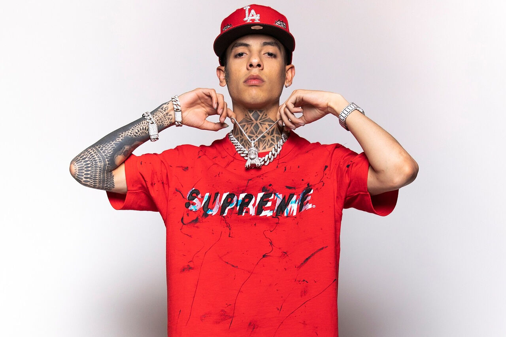
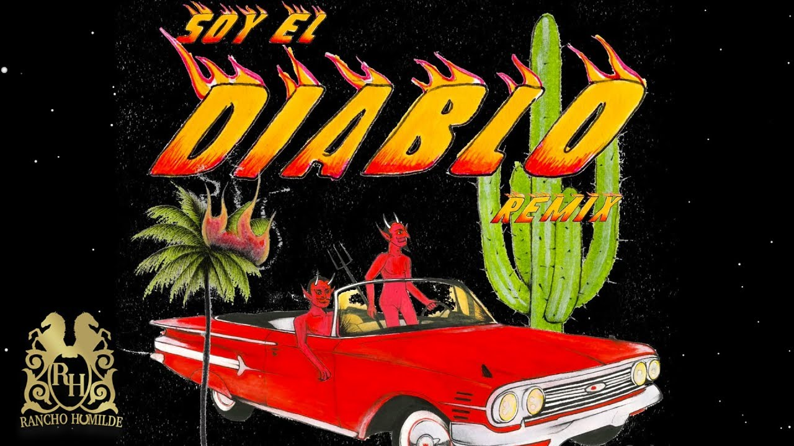

Natanael Rubén Cano Monge (Hermosillo, Sonora, México; 27 de marzo de 2001) conocido como Natanael Cano, es un
cantautor, rapero, músico y compositor de música regional mexicana. Se le conoce como uno de los mayores exponentes
del subgénero de los "corridos tumbados", fusión musical entre corridos y hip hop.
Cano nació en la ciudad de Hermosillo, Sonora, el 27 de marzo de 2001. Se crio y creció en esa ciudad, motivado por su
papá comenzó a tocar la guitarra y cantar a la edad de 9 años cuando actuaba frente a su familia en reuniones, al cursar
la escuela secundaria fue cuando se hizo más fuerte su gusto por la música, ya que no era un estudiante destacado. Actuaba
con sus compañeros en ratos libres entre clases influenciado por la carrera del cantante Ariel Camacho, Cano dejó la
preparatoria para hacer una carrera musical y se mudó a Estados Unidos para buscar la fama.

Natanael Cano comenzó su carrera en el año de 2018 en la disquera independiente Five Music, con la que lanzó solamente
cinco sencillos, su sencillo debut fue "El de los Lentes Gucci". A mediados de 2019, firmó con la disquera La R Records
para publicar su primer álbum de estudio titulado Todo es Diferente publicado en junio de ese año. Meses después, firmó
contrato con la compañía Rancho Humilde, ubicada en Los Ángeles, y en octubre del mismo año lanzó la canción "El Drip",
su primer gran éxito en listas musicales, la canción se posicionó en el top 50 del Hot Latin Songs de Estados Unidos y
logró vender 480 mil copias en ese país. A finales de 2019, Cano se hizo viral en gran parte de América, cuando el
reguetonero puertorriqueño Bad Bunny reaccionó en un video a la música del mexicano cantando la canción "Soy el Diablo",
pista que forma parte del primer álbum de Natanael, lo que desencadenó una colaboración y así en octubre lanzar juntos
el remix de la canción, fusionando los géneros de ambos artistas.
|
|